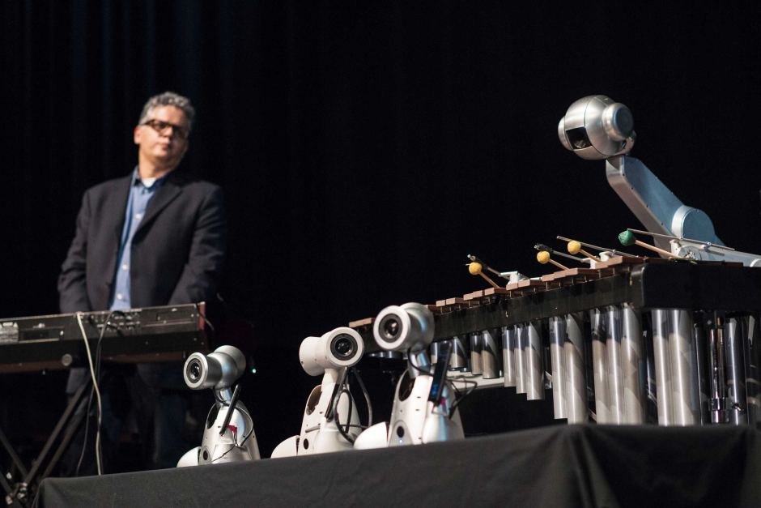

Shimon - the marimba player and singer
Shimon is a robot created by Researchers of Georgia Tech led by Professor Gil Weinberg. The project itself aims to create an AI musician, that can master the craft of playing a musical instrument, but even more impressively, can create its own music – including melodies, lyrics, and now even sing the songs it creates. Originally, Shimon was a pure marimba player that could improvise based on a few chords he was given. Today, the robot is reborn in a more polished way – being able to collaborate with humans in creating songs – starting from lyrics, going through melodies and ending with full songs that the robot sings himself.
Shimon uses machine learning to learn his craft – with a database of over 50 000 lyrics from various genres and a similar amount of melodies. It also uses semantics to create more polished lyrics, which he then sings using a voice, which was also created using machine learning at the Pompeu Fabra University in Barcelona, using training with hundreds of songs. Shimon also bobs his head and dances to the rhythms of the song, and he also moves his eyebrows, adding even more personality to him – the movements, however, are pre-programmed manually.
I really like the concept of using AI and computers for some unorthodox artistic way. Gil Weinberg’s robot is a living example and a pioneer in how robots and AI could bridge the gap to being more human. Creativity, a trait typically limited to humans, is something that Shimon is displaying in his songs and lyrics, paving the way for how machine learning could in the future result in true “copies” of some human traits. Shimon’s lyrics still show a limitation all texts written by AI show – even though the sentences are built correctly, they do not have any real meaning. Nevertheless, Shimon shows that in the future, we can expect more and more impressive artistic, creative and independent-thinking machines, that could bring us some valuable artistic content.
The beauty of this project is that it connects humans and computers to create a unique piece of art. It shows how far AI has gotten, and how through collaboration with humans, artificial intelligence can produce valuable things. Using neural networks, musicians are now able to create companions that elevate their craft of music to a new level – just like Gil Weinberg said – he cannot write lyrics, but in collaboration with his AI, he wrote new songs now and is going on tour with Shimon. The project shows human-computer interaction in a non-traditional, yet inspiring light, that points to a future where computers are no longer just tools for computation and simplifying things, but also have a deeper meaning and values.